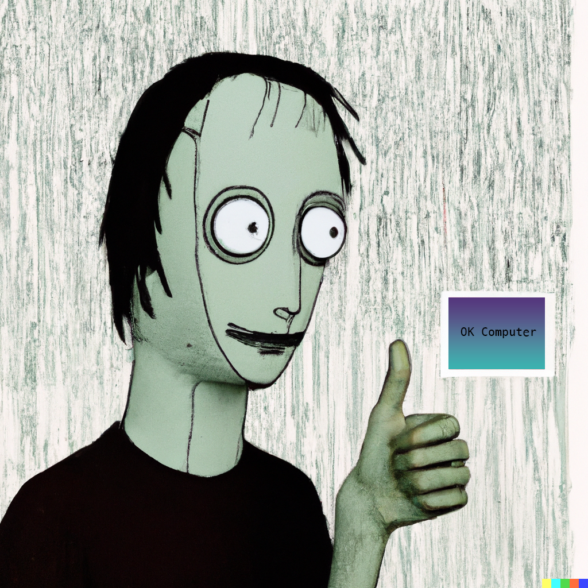

Greetings Radioheads and OK Computers!
OK Computer is the third studio album by the English rock band Radiohead, released in the UK on the 16th of June 1997. Radiohead self-produced the album with Nigel Godrich, an arrangement they have used for their subsequent albums. Radiohead recorded most of OK Computer in their rehearsal space in Oxfordshire and the historic mansion of St Catherine's Court in Bath in 1996 and early 1997.
